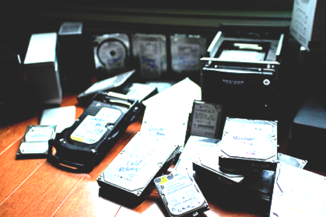
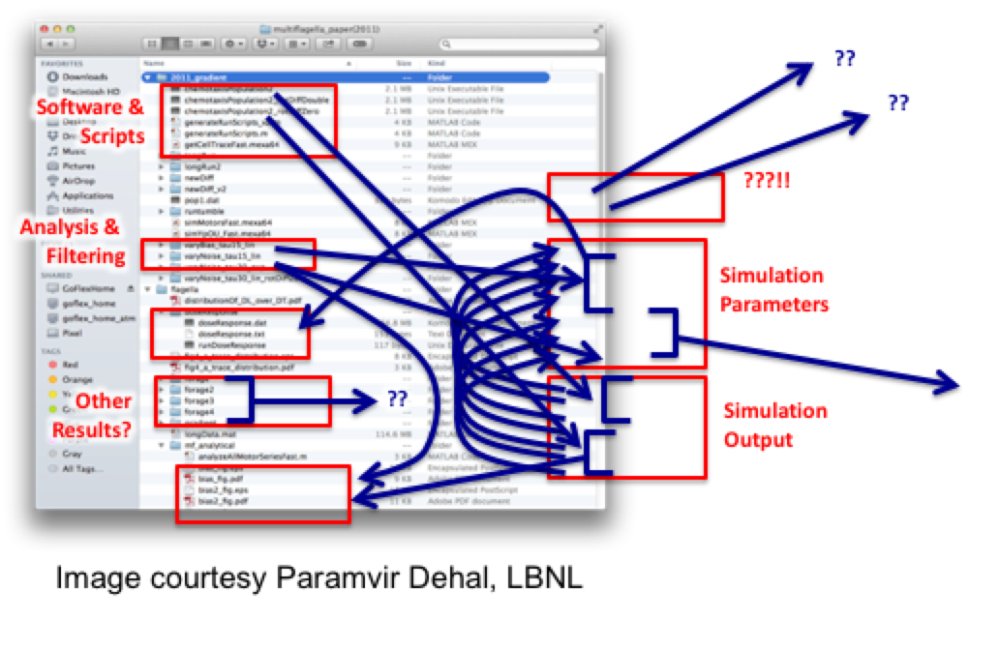
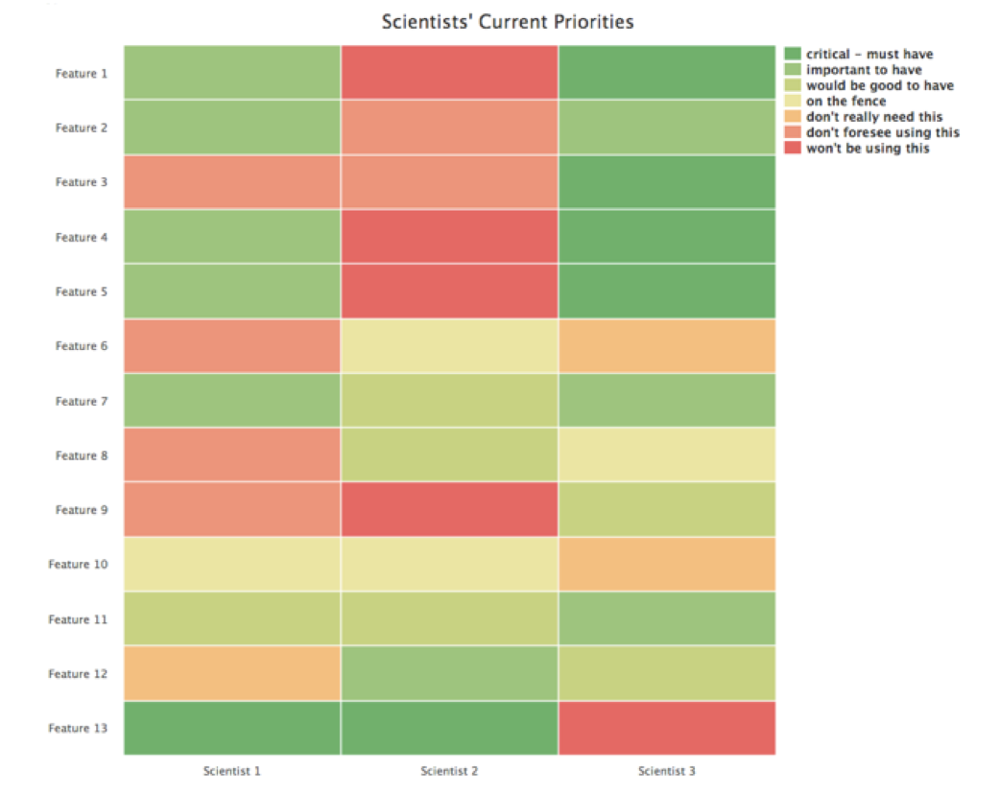
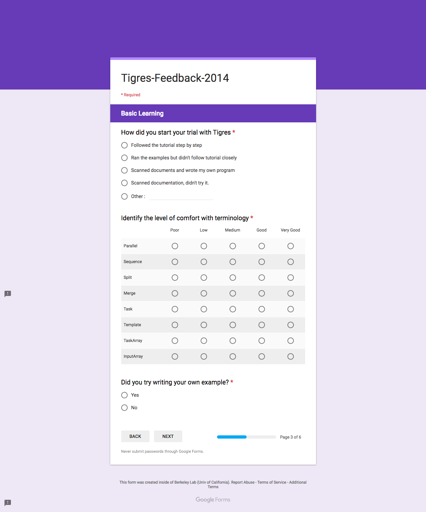
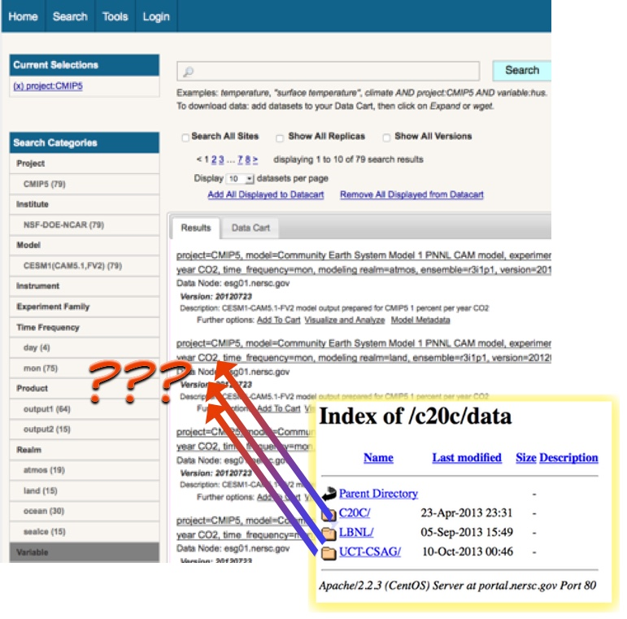

1Solve the right problem first
We were out to do some research on understanding next-generation big data problems. We got together because there was mutual interest. But what the user really had was an immense problem of data management -- he was simply running out of space.

2Understand user motivations
Many of us have seen screenshots similar to these where people have complex processes to manage the software and scripts and data from their simulations and effectively have metadata and provenance in file names.

3Understand the context of use
If we don't know where and how the scientists are collecting the data,
the system we build probably won't be useful.
4Validate and verify what you have heard
One of the questions we often struggle with is dealing with the chaos of user requirements and "what do they actually mean?". To help clarify, we asked users to rate their feeling about the various features, and asked them to rank them. The final heatmap was revealing. It was far from what the computer engineers thought they should prioritize, and it also showed that users were different from each other.

5Test before building; test after building
We did a "paper prototype" usability for an API, to get feedback from our user on nomenclature and understand what our users valued the most. After developing a product, we performed a second round of usability study -- this time, to study the effectiveness of using the API more thoroughly, and over a longer time period.

6Clean interfaces can't make up for bad design
If the user thinks in terms of hierarchies of organisms, or files, it will be difficult to
satisfy them with a flat design.

7Build for the right user
"What would I do?" may be extremely misleading. You have to continually ask yourself whether you are really modeling a real user, or just targeting someone who is convenient for you to think about (like yourself!)
8Understand the user's metrics
When computer engineers think about porting codes to HPC, they tend to think about performance of the codes. This is only one part of the picture. When we talked to users, they consistently worried about their own time -- time waiting to run, time debugging, etc. -- as the primary metric. If running on HPC is wasting too much of their time, performance gains of the code itself are not very important.
9Cost / Benefit for the scientists is different from the developers
10Be willing to iterate (early and often)
Needs change, process itself needs to be iterative. Time is of essence in engagements. Might need to iterate over designs -- but don’t aim for perfection either.